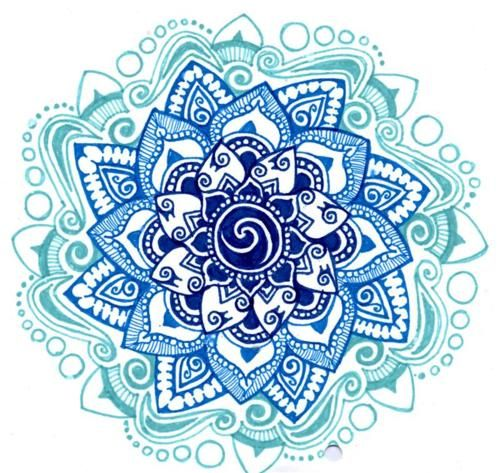
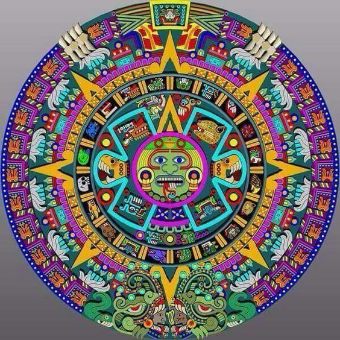

El nombre de Mandala tiene su origen en la India y proviene del sánscrito que significa “Círculo Sagrado”. Los Mandalas representan todo nuestro ser en su totalidad, ya que expresan lo que es la psique humana. Cada persona responde a los estímulos que provocan los Mandalas, sin importar la edad, el género, la raza, tradiciones, entre otros valores.
Sus orígenes tienen asentamiento en el Janaismo, Tantrismo, Hinduismo, Budismo y Lamaísmo, a pesar de que se encuentran por todo el mundo. Su nombre en tibetano es KYLKHOR, partiendo de la raíz KYL que es el centro, y KHOR significa círculo, siendo llamado literalmente “el centro de los alrededores”.

Se dice que dentro de la cultura egipcia, los Mandalas se utilizaban constantemente gracias a la fuerza que éstos transmitían, donde eran empleados irradiaban de energía el sitio. Eran usados como un instrumento primordial para el proceso de la meditación profunda. Dentro de los hogares, las familias los usaban con la intención de atraer la energía positiva y transformar la energía negativa convirtiéndola en positiva, lo que creaba un ambiente de armonía y balance.
En el caso de China, son utilizados en la actualidad para producir la abundancia y atraer la prosperidad, así como también para enriquecer la salud. En cuanto a su uso por parte de la cultura americana y sus tribus indígenas, se ponen de manifiesto en la presentación de bordados muy coloridos, adornados con plumas y animales nativos.

En otras culturas, se utilizaban a los Mandalas para protegerse contra los malos espíritus, para ello, se empleaba como una especie de amuleto el cual, además de ser un elemento decorativo, servía para promover la valentía y el coraje.
Los oriundos de Navajo realizaban rituales donde se narraban oraciones y se hacían pinturas de arena formando distintos Mandalas, los cuales no eran permanentes, pero ayudaban a invocaban a los seres sagrados al mismo tiempo que eran empleados como altares provisionales. Eran dibujados en las casas con la intención de beneficiar tanto a los habitantes de ese hogar como a todos los que conformaban la tribu.
Existen Mandalas que establecen una relación metafórica entre el lenguaje y los símbolos. El más representativo tiene forma ovoide, delineado con una cruz en su interior, con la cual se divide al mandala en cuatro partes distintas. Esta división pertenece a los cuatro elementos aire, agua, fuego y aire, así como a los cuatro puntos cardinales. Este Mandala es conocido como el “huevo de amma”, que es tomado como una especie de vientre donde convergen todos los signos del mundo.
Las culturas tienen como base del mandala la acción de meditar y trabajar para lograr con ello una evolución propia. Se convierte en un elemento primordial para poder entender la ubicación que tiene una persona dentro del mundo, así como su semejanza con el cosmos y con el infinito.
Los sefirot están constituidos por diez esferas donde se recibe una luz divina la cual se manifiesta a través de ellas. Estas esferas son etapas sucesivas de la luz, que le otorgan al hombre las herramientas para poder entender cómo se conforma el infinito y los temas referentes a los celestial y divino. Hay 22 letras hebreas que pasan por los 10 sefirot del árbol de la vida, que al universo forman el Mandala. Es así como cada sefirot pasa a conformar distintas zonas de la conciencia, camino que se debe transitar para poder evolucionar y hallar la esencia del ser dentro de la unión vista como un todo.
Las representaciones que forman parte de las tradiciones nórdicas se presentan como una especie de recipiente contentivo de los distintos símbolos que personifican la búsqueda de la armonía, estableciendo una asociación de lo interno con lo externo, es así como los Mandalas representan las energías sagradas que se distribuyen dentro de los diversos planos de la conciencia.
Un Mandala, representa el símbolo del cosmos y de la eternidad, es hacer referencia a la creación, al mundo, al ser humano, a la vida. Debemos percatarnos de que todo en la vida está constituido por un círculo, partiendo desde la óptica del universo donde se encuentra el sol, la luna, los planetas, hasta el esquema de toda nuestra naturaleza, es decir, los árboles, las flores, entre otros.
Dichos elementos están constituidos por una línea circular, por lo que todo lo que nos rodea tiene forma de círculo, lo que a su vez vienen a conformar los ciclos infinitos de la vida. Inclusive, dentro de la estructura de nuestro cuerpo tenemos formas redondeadas, demostrando con ello que nuestro ser es un sistema dentro de otro sistema, que depende lo un absoluto y el absoluto está dentro nuestro.